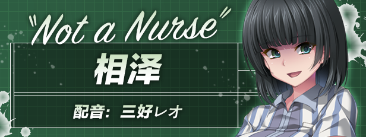

游戏名称/ Title: 搾精病棟 〜凶悪なる看護師長が支配する病院の深淵へ潜入捜査〜
制作公司/ Production: だーくワン！
发售日期/ Release Date: 2022/10/28
游戏类型/ Genre: ADV
故事介绍
──我是山田。除了患上了怪病以外，我就只是个摔断双手而入院的平凡学生。
传闻中，我入住的医院里全都是“个性最糟”的护士，
但这件事并不是传闻，而是板上钉钉的事实……
不过现在在我眼前发生的事情的糟糕程度，甚至快要将这些事实掩盖过去。
禁药的制造。
与黑道组织的联手关系。
警察的卧底搜查。
紧急封院。
在我不知道的地方，各方人马的思想交错进而产生混乱，而我只能被动地被卷入漩涡之中。
什么是正确的？又是谁走错路了呢？
何为罪恶？谁又能降下制裁呢？
究竟我是否能够找出解答，平安地出院吗……？
人物介绍
天童麻子
CV: 青山ゆかり
在医院中担任护士长的女性。
虽然她的职位理应只能管理护士们，但事实上她是个连医师、经理甚至连院长都无法反抗的绝对权力者。
听说她会对自己看不顺眼的职员降下苛刻的制裁，也传闻她有很多危险的人脉。
她不断地追求权力与财力，是个为了达到目的而不择手段的无情之人。
dbd4f0166676215203c463261f319ee6301f20f4
天童美亚
CV: みる
护士长的亲妹妹。也是医院中人人闻风丧胆的“3大老鸟”之一。
个性极其怪异，让人无法预测她会做出怎样的怪事。
因此被她弄得团团转或是困扰的人很多，
但因为医院内掌有权力的护士长很溺爱她，所以大家一直无法对她的行为进行抱怨。
雨宫
CV: 大花どん
以自己的直觉与灵感，不停地开发出令人惊叹的新药的超级天才（？）医师兼药学博士。
真的很有才华但伦常观念偏差极大，常会将尚未经过临床实验的自制新药直接使用在患者身上。
大冢
CV: ももぞの薫
以前在国家代表队时拿过冠军，曾是个将来无可限量又拥有高壮体格的柔道选手。
因为受伤的关系退休以后她总是垂头丧气，直到雨宫邀她成为自己的助手她才发奋地往助手之路迈进。
相泽
CV: 三好レオ

医院附设的便利店店员。
但那只是她为了掩人耳目所伪造的身分。
实际上她是为了暴露医院与黑道组织之间的关系，而正在进行潜入搜查的警察。
正义感强烈，是个重视伙伴的义气之人。
于本作中，她委托山田帮忙她的潜入搜查。
山田
CV: -
患上了怪病的青年。
虽然有着优柔寡断又容易被他人影响的缺点，但在本作中的重要场面他会下定决心并挺身而出。